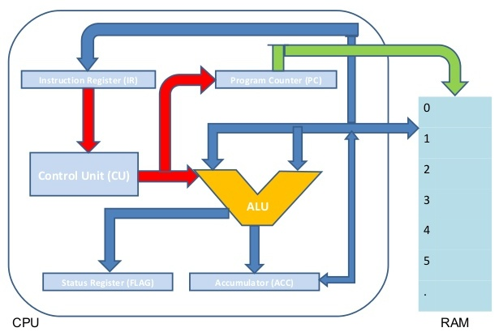

- CPU (ang. Central Processing Unit)
- - układ cyfrowy wykonany jako pojedynczy układ scalony o wielkim stopniu integracji zdolny do wykonywania operacji cyfrowych według dostarczonego ciągu instrukcji.
Schemat budowy mikroprocesora
RAM - Pamięć operacyjna
ALU - Jednostka arytmetyczno-logiczna
FPU - Koprocesor arytmetyczny, jednostka zmiennoprzecinkowa
ACC - (lub A) Akumulator
FLAG - Rejestr flagowy (stanu, statusu)
CU - Układ sterowania
IR - Rejestr instrukcji
- Rejestry
- - komórki pamięci o niewielkich rozmiarach umieszczone wewnątrz procesora i służące do przechowywania tymczasowych wyników obliczeń, adresów lokacji w pamięci operacyjnej itd.
- Magistrale
- (ang. bus) – zespół linii przenoszących sygnały oraz układów wejścia-wyjścia służących do przesyłania sygnałów między połączonymi urządzeniami w systemach mikroprocesorowych. Wyróżniamy magistrale: danych, adresowa, pamięci, sterująca.
- Pamięć podręczna
- (ang. cache) – mechanizm, w którym część spośród danych zgromadzonych w źródłach o długim czasie dostępu i niższej przepustowości jest dodatkowo przechowywana w pamięci o lepszych parametrach.
- Pamięć podręczna procesora (ang. CPU cache)
- - jest pamięcią typu SRAM o krótkim czasie dostępu. Zlokalizowana jest często bezpośrednio w jądrze procesora.
- L1 - pamięć podręczna pierwszego poziomu, .lokalizowana we wnętrzu procesora przyspiesza dostęp do bloków pamięci wyższego poziomu.
- L2 - pamięć podręczna drugiego poziomu, jest wykorzystywana jako bufor pomiędzy pamięcią RAM a jądrem procesora i pamięcią L1.
- L3 - pamięć podręczna procesora trzeciego poziomu, jest wykorzystywana, gdy pamięć L2 jest niewystarczająca aby pomieścić potrzebne dane.
Bibliografia:
http://egzamin-e12.blogspot.com/2017/11/repetytorium-cz-31-mikroprocesor.html